Oracle VirtualBox |
|
Oracle VM VirtualBox — специальная программа, дающая возможность запустить на вашем компьютере виртуально другие операционные системы.
С её помощью можно виртуализировать разные версии Windows, также доступна работа с FreeBSD, Linux, ReactOS, Solaris/OpenSolaris, Mac OS X, DOS. |
| Установка программы проходила в 3 этапа: лицензионное
соглашение, выбор места для инсталляции, установка дополнений для программы. |
 |
| Рис. 1 Установка программы |
| VirtualBox имеет удобный понятный интерфейс. В интерфейсе
всего 4 кнопки: создание новой машины, настройки машины удаление и запуск. |
| 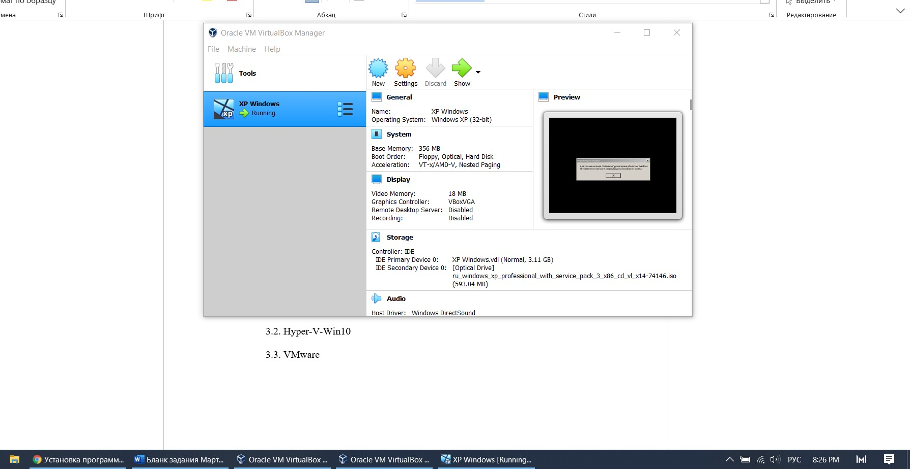 |
| Рис. 2 Начальный экран |
| Чтобы начать создавать машину – нажимаем на синюю
кнопку создания машины. Мы выбираем название нашей машины, ее месторасположение, тип системы (версия windows, Linux, dos). |
| 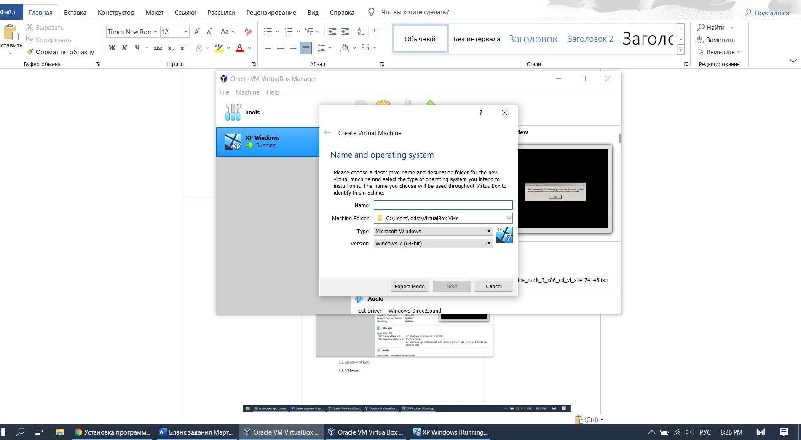 |
| Рис. 3 Создание машины |
| После выбора системы – выбирается кол-во оперативной памяти. Далее выбирается
уже имеющееся пространство для
хранения файлов на ssd или создание нового выделенного пространства. И после выбора диска – выделение кол-ва места. |
| 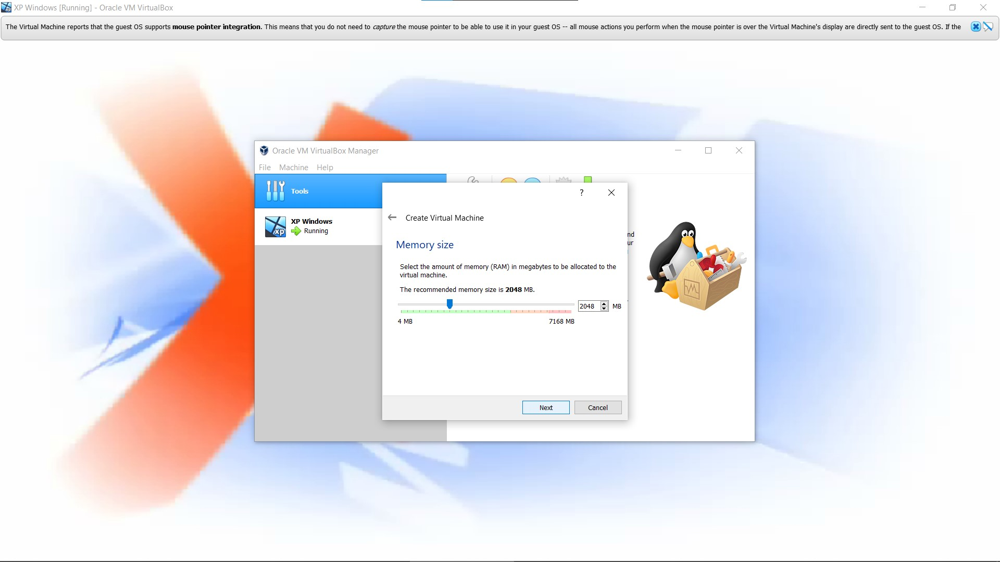 |
| Рис. 4 Выбор оперативнной памяти |
 |
| Рис. 5 Создание диска |
| 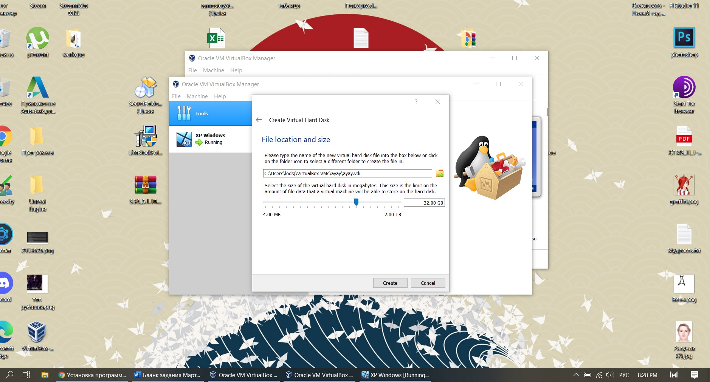 |
| Рис. 6 Выбор кол-ва памяти диска |
| Настройки машины состоят из выбора образа системы из памяти ПК,
выбора кол-ва ядер процессора. Также можно выбрать дисплей на котором будет появлятся машина.
Есть вкладка USB – тут можно дополнительно установить софт для подключения usb устройств к машине.
И, наконец, создание общей папки. Она позволяет выделить папку через которую будет происходить сообщение файлами между основной системой и виртуальной. |
 |
| Рис. 7 Настройки системы |
| Вывод: Машина имеет удобный интерфейс для пользователя,
но без сторонних источников сложно разобраться с установкой образа ОС. Имеет расширенный функционал, но для полноценной работы машины – необходимо
установить некоторые дополнения для программы. Единственная проблема – плохая оптимизированность работы виртуальной машины. |
Hyper-V-Win10 |
|
Hyper-V — это продукт виртуализации оборудования Майкрософт. Она позволяет создавать и запускать программную версию компьютера,
называемую виртуальной машиной. Каждая виртуальная машина действует как полноценный компьютер, запускающий операционную систему и
программы. Если вам нужны вычислительные ресурсы, виртуальные машины предоставляют больше гибкости, помогают экономить время и деньги
и являются более эффективным способом использования оборудования, чем запуск одной операционной системы на физическом оборудовании. |
| Hyper-V выполняет каждую виртуальную машину в отдельном изолированном пространстве. Это означает, что на одном и том же оборудовании
можно запускать несколько виртуальных машин одновременно. Это можно сделать, чтобы избежать таких проблем, как сбой, влияющих на другие
рабочие нагрузки, или предоставить другим пользователям, группам или службам доступ к разным системам. |
| Установка программы может производится
только через компоненты windows. Там нужно найти компонент Hyper-V и включить его. |
| 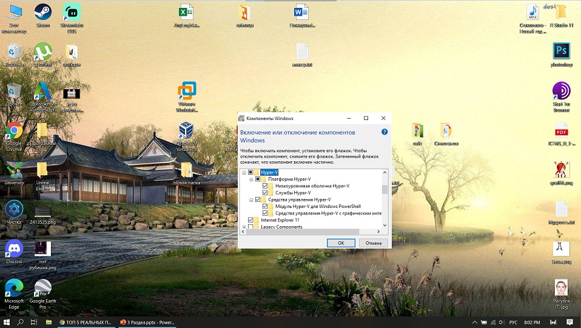 |
| Рис. 8 Запуск Hyper-V |
| Начальный экран программы имеет очень маленький функционал. Все потому, что мы еще не подключили программу к нашему устройству.
Необходимо исполнить специальный код в PowerShell. |
 |
| Рис. 9 Начальный экран |
| После запуска команды через PowerShell – мы
можем подключиться к серверу – выбрать мост и имя нашей виртуальной машины. |
 |
| Рис. 10 Подключение к серверу |
| После подключения к серверу мы можем
выбрать машину и изменить ее настройки, запустить ее. Также из действий запускается проверка
диска или изменение диска. |
| 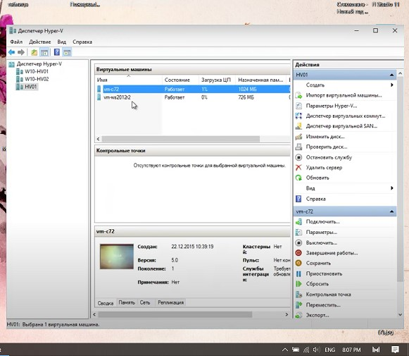 |
| Рис. 11 Действия над машиной |
| Настроек машины всего 2. Это выбор графического процессора и места для хранения данных на диске. Также отдельно можно выделить
расширение сеанса – это когда все файлы могут переправляться между локальным устройством и виртуальным. |
| 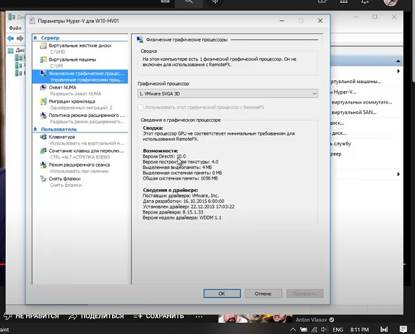 |
| Рис. 12 Настройки машины |
| 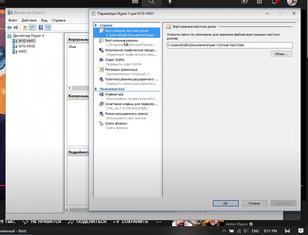 |
| Рис. 13 Настройки машины |
| Вывод: Программа может быть запущена только на Windows 10 professional, education, pro edition. На остальных ОС установка невозможна.
Программа имеет сложный интерфейс – нужно запускать подключение ее к серверу и пк через PowerShell. Так что без использования сторонних
источников – не получится запустить образ. Настроек у машины – почти нет. |
VMware |
|
VMware Workstation Player (прежнее название Player Pro) – это оптимизированное приложение для виртуализации настольных компьютеров,
предназначенное для одновременного запуска нескольких операционных систем на одном и том же компьютере без перезагрузки.
Удобный интерфейс VMware Workstation Player, а также широкий выбор поддерживаемых операционных систем и гибкие возможности
переноса ВМ существенно упрощают задачу предоставления корпоративным пользователям полноценных виртуальных компьютеров сотрудниками IТ-отдела. |
| VMware Workstation Player содержит модернизированный пользовательский интерфейс, служащий для создания, запуска и оценки операционных систем
и приложений в виртуальных машинах на Windows или Linux. В VMware Workstation Player пользователь может легко взаимодействовать и обмениваться
данными между приложениями, запущенными в виртуальной машине и в реальной системе. Благодаря интуитивному интерфейсу и простой установке, VMware
Workstation Player является самым удобным способом для развертывания виртуальных машин для работников, исполнителей и заказчиков. |
| Установка программы проходит очень быстро – только лицензионное
соглашение и выбор папки для инсталляции. Стоит отметить, что программа платная. |
 |
| Рис. 14 Установка VMware |
| Начальный экран программы имеет понятный дизайн. Все функции,
которые написаны – такой функционал и имеют. Слева есть список, в котором будут
находится наши машины и их настройки. В центре можно выбрать создание машины или запустить уже существующую. |
| 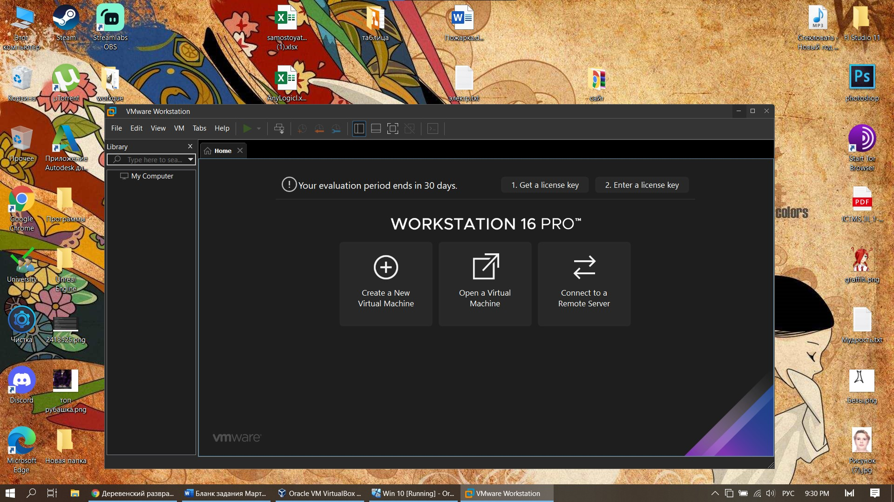 |
| Рис. 15 Начальный экран |
| Для создания машины мы сперва выбираем образ для машины.
Или можно установить образ после создания машины. |
| 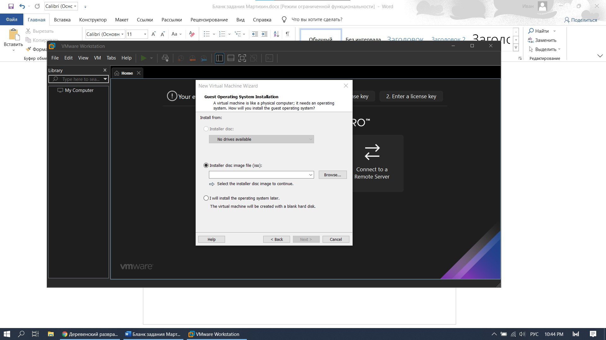 |
| Рис. 16 Настройка машины |
| После выбора образа – сразу начинается создание машины.
Мы не выбираем сразу настройки машины – такие как размер оперативной памяти или размер диска. |
| 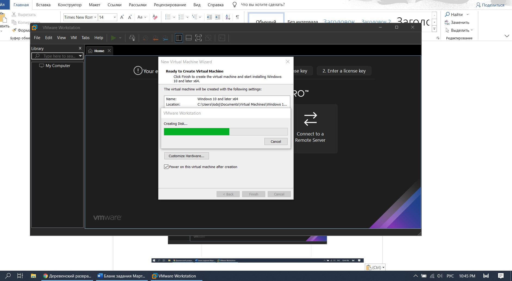 |
| Рис. 17 Создание машины |
| Можно выделить следующие настройки машины – Сколько оперативной
памяти можно выбрать, расположение диска хранения файлов, кол-во памяти для машины.
Также как и у VirtualBox можно определить видимость подключенных usb устройств в машине.
Диск можно расширить в любой момент или разделить его на разделы. |
 |
| Рис. 18 Настройки машины |
| В настройках запуска машины можно выбрать образ, если мы не выбрали
про создании его. Также можно выбрать категорию ОС. |
| Рис. 19 Настройки запуска машины |
| Вывод: Программа платная, но первые 30 дней пользования – бесплатны.
Работа установленной системы будет плавная и с высоким fps. Система
оптимизирована. Имеется выбор настроек и сохранения запущенного состояния машины. |